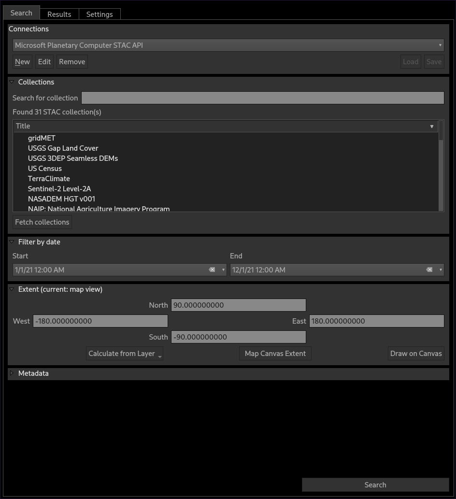
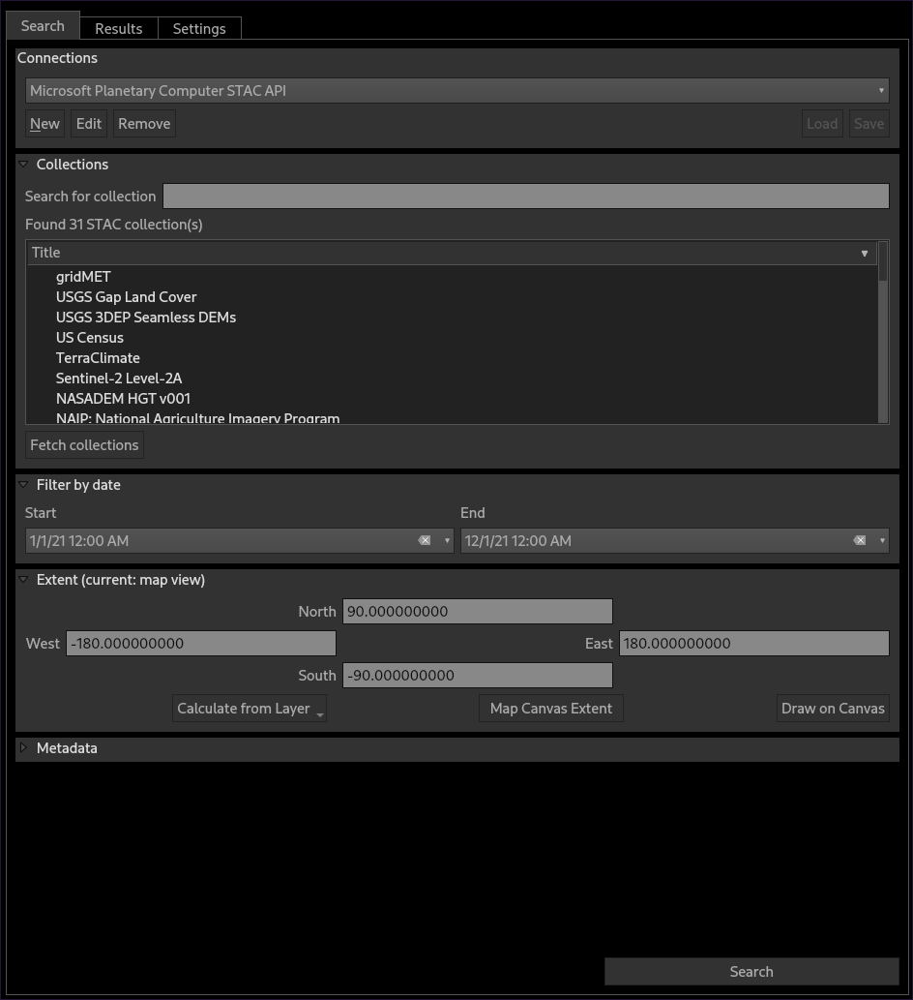

QGIS plugin for reading STAC APIs.

Documentation
https://stac-utils.github.io/qgis-stac-plugin/
QGIS plugin for reading STAC APIs.

https://stac-utils.github.io/qgis-stac-plugin/
From here you can search these documents. Enter your search terms below.
| Keys | Action |
|---|---|
| ? | Open this help |
| n | Next page |
| p | Previous page |
| s | Search |